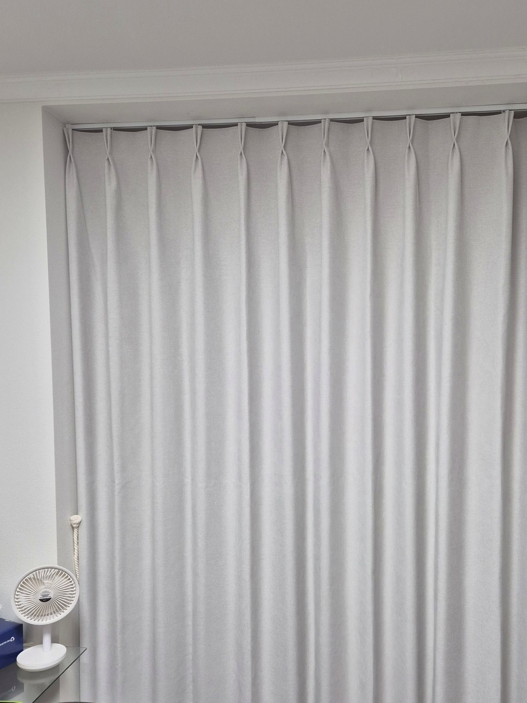
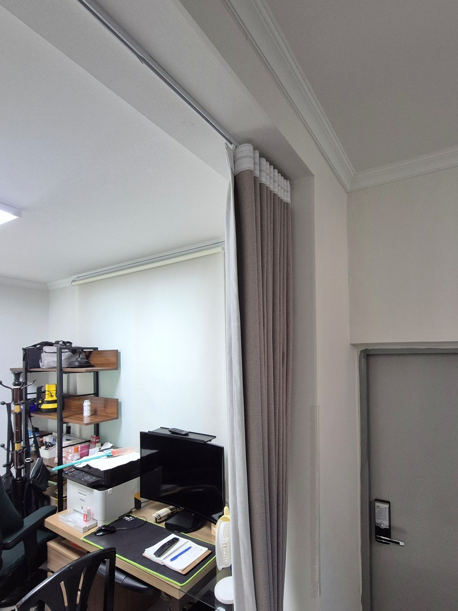
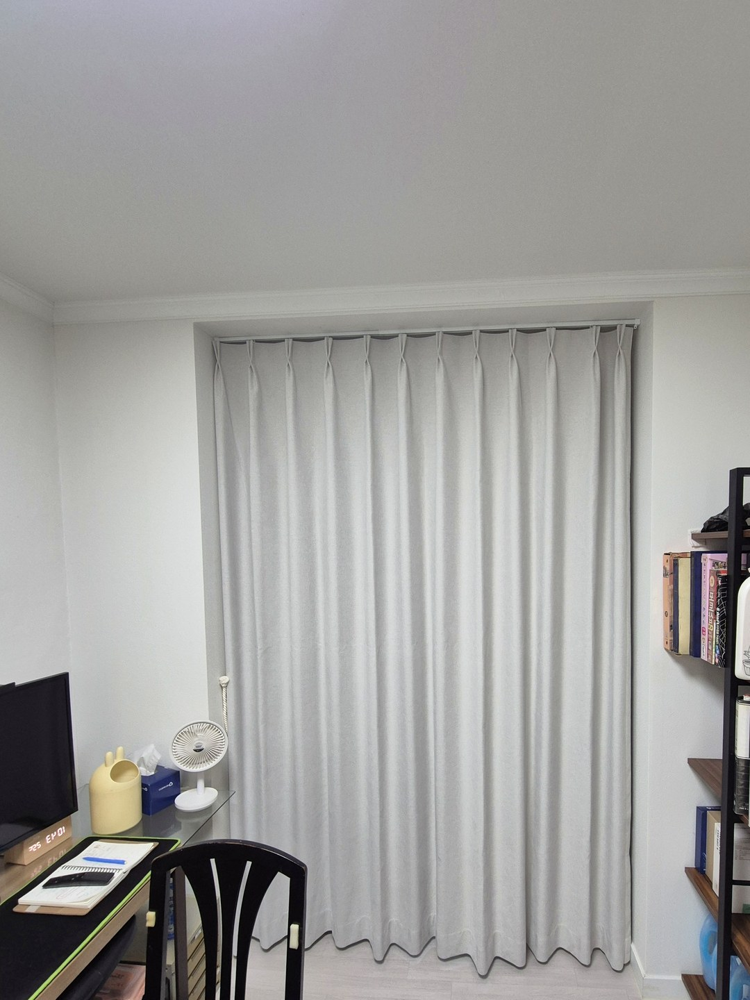
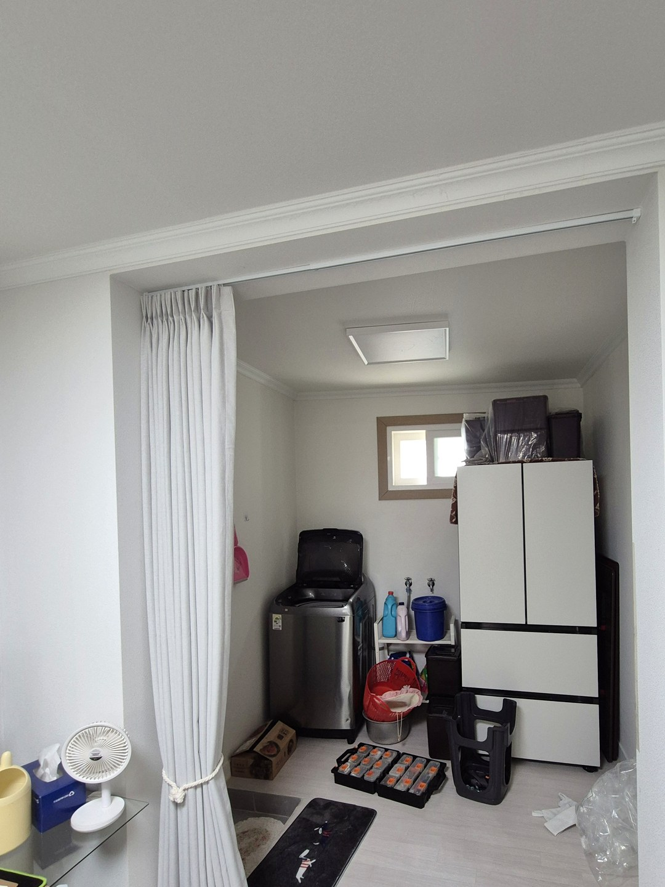
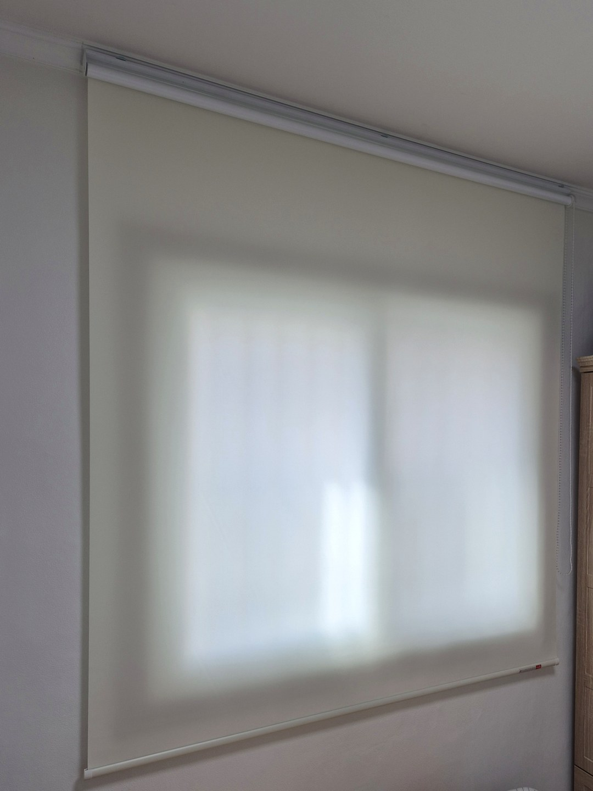
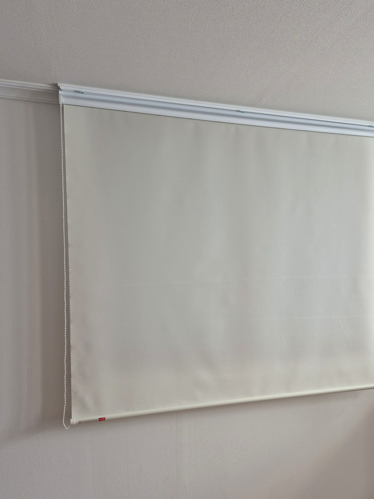
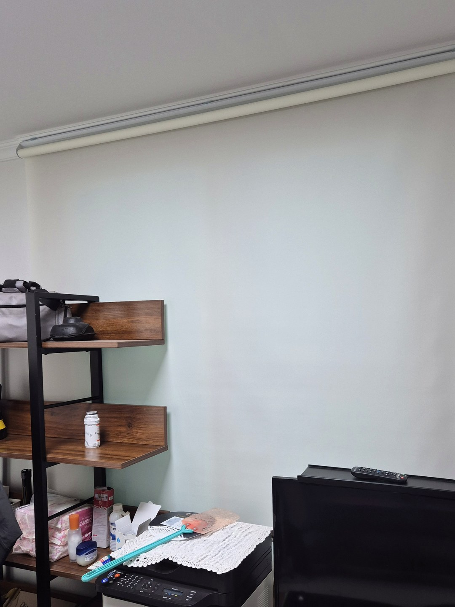
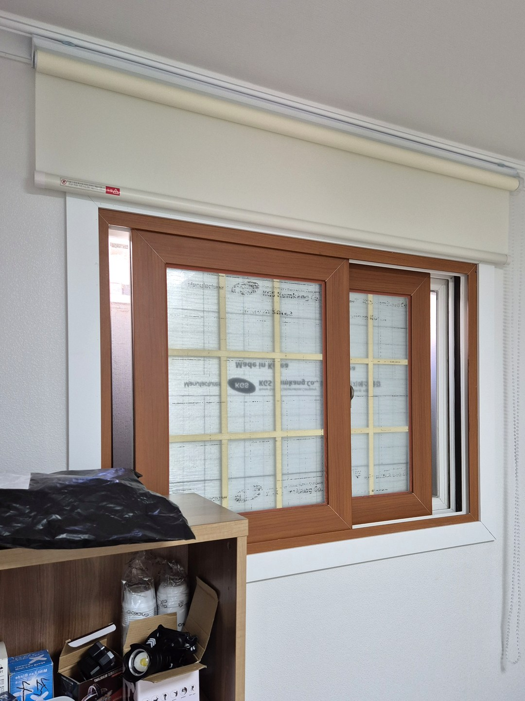

2026년 9월 23일 시공
영천 망정동 주택
현관 암막커튼 · 작은 창 롤스크린 시공후기

영천 망정동의 단독주택에서 진행한 시공입니다.
이 집에서 가장 신경 쓴 자리는 창이 아니라 현관에서 거실로 들어오는 통로였습니다.
그 통로에는 암막커튼을, 방마다 있는 작은 창에는 롤스크린을 달았습니다.
주택 현관이 겨울에 추운 이유

공동주택은 현관 밖에 복도나 계단실이 있어서 바깥 공기가 한 번 걸러진 뒤에 들어옵니다.
단독주택은 사정이 달라서, 현관문 한 장을 사이에 두고 바로 바깥입니다.
그래서 문을 여닫을 때마다 찬 공기가 실내 깊숙이 밀려들고, 흙먼지도 함께 따라 들어오기 쉽습니다.
이 집은 현관과 생활 공간 사이에 문이 없이 트여 있었습니다.
문을 새로 짜 넣는 대신 천장에 레일을 달고 바닥까지 닿는 커튼으로 경계를 만들었습니다.
원단과 주름 — 암막, 두배 나비주름

바람을 막는 자리에서는 빛보다 원단의 밀도가 중요합니다.
성긴 원단은 공기가 쉽게 빠져나가고, 가벼워서 문을 열 때마다 들썩입니다.
그래서 조직이 촘촘하고 무게가 있는 암막 원단을 골랐습니다.
주름은 원단을 폭의 두 배로 넣는 두배 나비주름입니다.
천이 여러 겹으로 접혀 서기 때문에 한 겹일 때보다 공기가 지나가기 어렵고, 닫았을 때 모양도 단정하게 떨어집니다.
통로에는 편개가 편합니다

커튼을 한 방향으로만 여닫는 방식을 편개라고 합니다.
하루에도 여러 번 사람이 오가는 통로라서, 가운데가 갈라지는 양개보다 한 번에 밀어 젖히는 편개가 손이 덜 갑니다.
날이 풀린 낮에는 걷어 묶어 두고, 해가 지거나 집을 비울 때 쳐 두시면 됩니다.
방마다 작은 창에는 롤스크린

작은 창에 커튼을 달면 원단 양에 비해 주름이 몇 줄 서지 않아 어색해지기 쉽습니다.
롤스크린은 창 위 통 하나에 원단이 감겨 있어 벽이 깔끔하게 남고, 좁은 방에서도 부피를 거의 차지하지 않습니다.

색은 벽지와 가까운 밝은 계열로 맞췄습니다.
내려 두었을 때 창만 따로 튀지 않아서, 방이 한결 넓고 조용해 보입니다.


미리 알려 드리는 것
커튼은 문이 아니기 때문에 외풍을 완전히 끊지는 못합니다.
천장 레일 쪽과 바닥, 벽 끝에는 틈이 남고 그리로 공기가 조금씩 오갑니다.
찬 공기가 생활 공간까지 곧장 들이치는 것을 줄여 주는 정도로 기대하시는 것이 정확합니다.
대신 공사 없이 레일 하나로 달 수 있고, 계절이 바뀌면 걷어 두기만 하면 됩니다.
통로 폭과 천장 높이에 따라 레일 위치와 원단 길이가 달라지므로 실측 때 함께 정해 드립니다.
영천 커튼·블라인드 상담
현관 쪽 바람이 신경 쓰이신다면 통로 사진과 대략적인 폭·높이를 보내 주십시오.
창만이 아니라 통로와 문 주변까지 같이 보고 제안해 드립니다.
영천은 경북 담당 실장이 직접 실측하고 설치합니다.